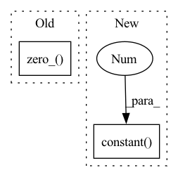

Pattern ID :12636
Before Change
m = LinearizedConvolution(in_channels, out_channels, kernel_size, **kwargs)
std = math.sqrt((4 * (1.0 - dropout)) / (m.kernel_size[0] * in_channels))
m.weight.data.normal_(mean=0, std=std)
m.bias.data.zero_()
return nn.utils.weight_norm(m, dim=2)
def ConvTBC(in_channels, out_channels, kernel_size, dropout=0, **kwargs):After Change
m = LinearizedConvolution(in_channels, out_channels, kernel_size, **kwargs)
std = math.sqrt((4 * (1.0 - dropout)) / (m.kernel_size[0] * in_channels))
nn.init.normal(m.weight, mean=0, std=std)
nn.init.constant( m.bias, 0 )
return nn.utils.weight_norm(m, dim=2)
def ConvTBC(in_channels, out_channels, kernel_size, dropout=0, **kwargs):In pattern: SUPERPATTERN
Frequency: 12
Non-data size: 2
Instances Fragment ID: 42909952
Project Name: mohammadkhalifa/fairseq-tagging
Commit Name: 4c2ef2de74a2b80864591bb50d997da749c6461c
Time: 2018-06-15
Author: alexei.b@gmail.com
File Name: fairseq/models/fconv.py
M Class Name: AnonimousClass
N Class Name: AnonimousClass
M Method Name: LinearizedConv1d(4)
N Method Name: LinearizedConv1d(4)
M Parent Class:
N Parent Class:
M File Name: fairseq/models/fconv.py
N File Name: fairseq/models/fconv.py
M Start Line: 440
M End Line: 443
N Start Line: 581
N End Line: 584
Before Change
m = ConvTBC(in_channels, out_channels, kernel_size, **kwargs)
std = math.sqrt((4 * (1.0 - dropout)) / (m.kernel_size[0] * in_channels))
m.weight.data.normal_(mean=0, std=std)
m.bias.data.zero_()
return nn.utils.weight_norm(m, dim=2)
@register_model_architecture("fconv", "fconv")After Change
m = ConvTBC(in_channels, out_channels, kernel_size, **kwargs)
std = math.sqrt((4 * (1.0 - dropout)) / (m.kernel_size[0] * in_channels))
nn.init.normal(m.weight, mean=0, std=std)
nn.init.constant( m.bias, 0 )
return nn.utils.weight_norm(m, dim=2)
@register_model_architecture("fconv_lm", "fconv_lm") Fragment ID: 42909950
Project Name: neulab/retomaton
Commit Name: 4c2ef2de74a2b80864591bb50d997da749c6461c
Time: 2018-06-15
Author: alexei.b@gmail.com
File Name: fairseq/models/fconv.py
M Class Name: AnonimousClass
N Class Name: AnonimousClass
M Method Name: ConvTBC(4)
N Method Name: ConvTBC(4)
M Parent Class:
N Parent Class:
M File Name: fairseq/models/fconv.py
N File Name: fairseq/models/fconv.py
M Start Line: 450
M End Line: 453
N Start Line: 591
N End Line: 594
Before Change
Weight-normalized Linear layer (input: N x T x C)
m = nn.Linear(in_features, out_features)
m.weight.data.normal_(mean=0, std=math.sqrt((1 - dropout) / in_features))
m.bias.data.zero_()
return nn.utils.weight_norm(m)
def LinearizedConv1d(in_channels, out_channels, kernel_size, dropout=0, **kwargs):After Change
Weight-normalized Linear layer (input: N x T x C)
m = nn.Linear(in_features, out_features)
nn.init.normal(m.weight, mean=0, std=math.sqrt((1 - dropout) / in_features))
nn.init.constant( m.bias, 0 )
return nn.utils.weight_norm(m)
def LinearizedConv1d(in_channels, out_channels, kernel_size, dropout=0, **kwargs): Fragment ID: 42909949
Project Name: mohammadkhalifa/fairseq-tagging
Commit Name: 4c2ef2de74a2b80864591bb50d997da749c6461c
Time: 2018-06-15
Author: alexei.b@gmail.com
File Name: fairseq/models/fconv.py
M Class Name: AnonimousClass
N Class Name: AnonimousClass
M Method Name: Linear(3)
N Method Name: Linear(3)
M Parent Class:
N Parent Class:
M File Name: fairseq/models/fconv.py
N File Name: fairseq/models/fconv.py
M Start Line: 432
M End Line: 434
N Start Line: 573
N End Line: 575
Before Change
nn.init.xavier_uniform(self.in_proj_weight.data)
nn.init.xavier_uniform(self.out_proj.weight.data)
if self.in_proj_bias is not None:
self.in_proj_bias.data.zero_()
def forward(self, query, key, value, mask_future_timesteps=False,
key_padding_mask=None, incremental_state=None,
need_weights=True, static_kv=False):After Change
nn.init.xavier_uniform(self.in_proj_weight)
nn.init.xavier_uniform(self.out_proj.weight)
if self.in_proj_bias is not None:
nn.init.constant( self.in_proj_bias, 0. )
nn.init.constant(self.out_proj.bias, 0.)
def forward(self, query, key, value, mask_future_timesteps=False,
key_padding_mask=None, incremental_state=None, Fragment ID: 42909944
Project Name: neulab/retomaton
Commit Name: 60c4081b061c1fa813fc319087231478901f2e73
Time: 2018-06-15
Author: myleott@fb.com
File Name: fairseq/modules/multihead_attention.py
M Class Name: MultiheadAttention
N Class Name: MultiheadAttention
M Method Name: reset_parameters(1)
N Method Name: reset_parameters(1)
M Parent Class: nn.Module
N Parent Class: nn.Module
M File Name: fairseq/modules/multihead_attention.py
N File Name: fairseq/modules/multihead_attention.py
M Start Line: 43
M End Line: 46
N Start Line: 41
N End Line: 45